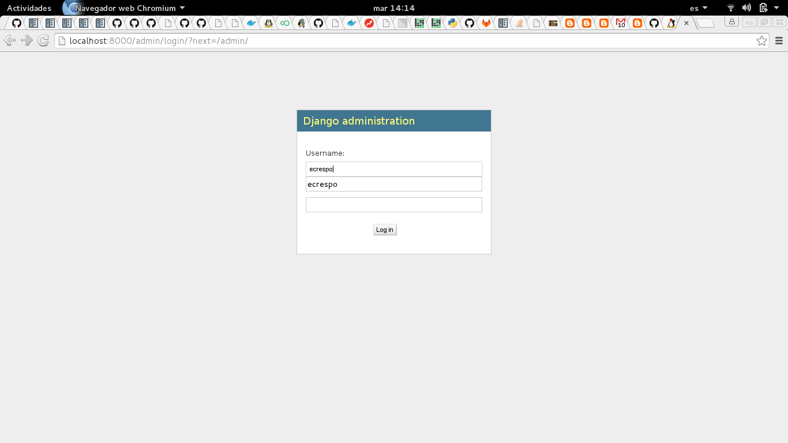
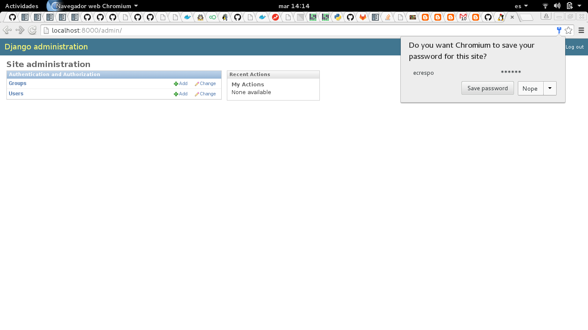
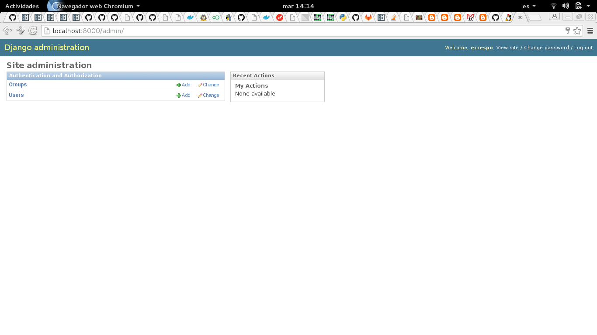
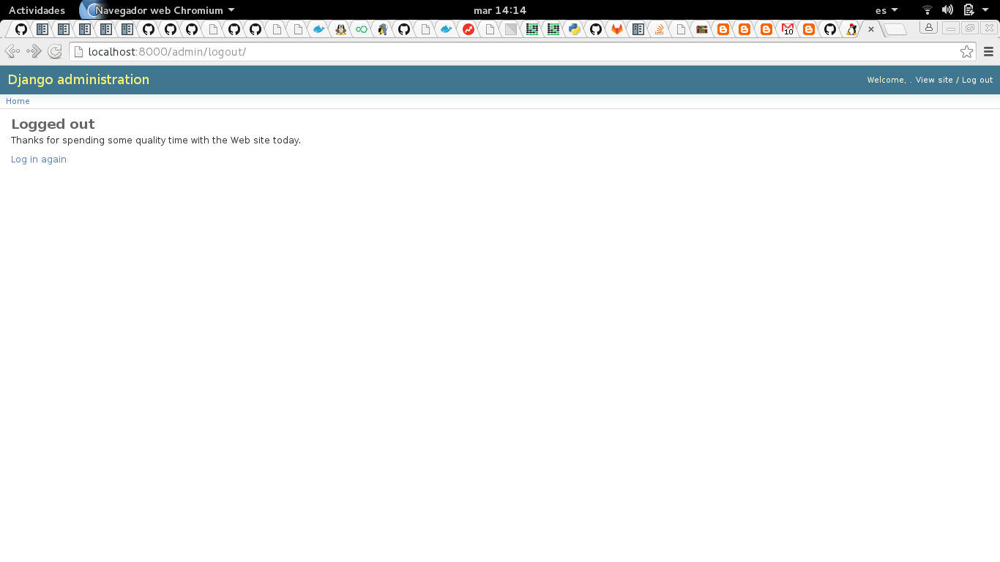
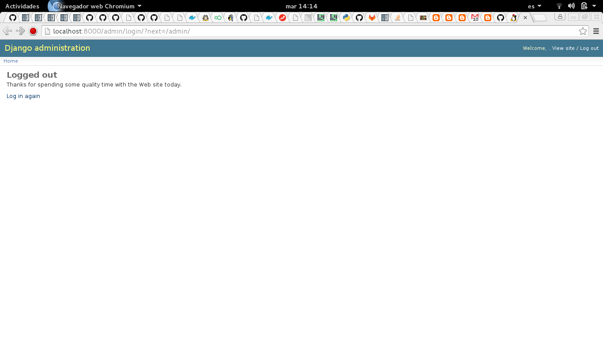

Automatizar prueba funcional del Inicio y fin de sesión del Admin de Django
Posted on mar 12 enero 2016 in Tutorial de Python • 2 min read
Los artículos anteriores sobre PyAutoGUI trataron sobre:
1. Capturas de pantalla, mover el ratón.
2. Hacer drag con el ratón para hacer un dibujo en Gimp.
Este artículo realiza un inicio de sesión en el Admin de Django, coloca el usuario, la clave, le da click al botón aceptar, le dice al navegador que no quiere guardar la clave, cierra la sesión y por último vuelve a la página de inicio del admin de Django.
El script guardará capturas de pantalla de cada paso que se realice.
Nota: Las coordenadas de los widgets de la página fueron capturados previamente.
El código se muestra a continuación:
#!/usr/bin/env python3
import pyautogui, time
time.sleep(2)
#Entrada de datos del usuario
pyautogui.click(540, 295)
pyautogui.typewrite('ecrespo')
#Se realiza la captura de pantalla
im1 = pyautogui.screenshot()
#Se salva en un archivo
im1.save('./imagenes/1.png')
time.sleep(2)
#Entrada de datos de la clave
pyautogui.click(540, 358)
pyautogui.typewrite('123456')
#Se realiza la captura de pantalla
im1 = pyautogui.screenshot()
#Se salva en un archivo
im1.save('./imagenes/2.png')
time.sleep(2)
#Darle click al boton de inicio de sesion
pyautogui.click(668, 397)
time.sleep(4)
#Se realiza la captura de pantalla
im1 = pyautogui.screenshot()
#Se salva en un archivo
im1.save('./imagenes/3.png')
#No guardar la clave del usuario
pyautogui.click(1232, 204)
time.sleep(4)
#Se realiza la captura de pantalla
im1 = pyautogui.screenshot()
#Se salva en un archivo
im1.save('./imagenes/4.png')
#Darle click a cerrar sesion
pyautogui.click(1335, 108)
time.sleep(4)
#Se realiza la captura de pantalla
im1 = pyautogui.screenshot()
#Se salva en un archivo
im1.save('./imagenes/5.png')
#Regresar a la pagina de inicio de sesion
pyautogui.click(42, 215)
#Se realiza la captura de pantalla
im1 = pyautogui.screenshot()
#Se salva en un archivo
im1.save('./imagenes/6.png')
A continuación se muestra las capturas de pantallas realizadas:






El vídeo de la interacción se muestra a continuación:
Con esta herramienta se pueden automatizar pruebas funcionales para aplicaciones de escritorio como de aplicaciones web.
¡Haz tu donativo! Si te gustó el artículo puedes realizar un donativo con Bitcoin (BTC) usando la billetera digital de tu preferencia a la siguiente dirección: 17MtNybhdkA9GV3UNS6BTwPcuhjXoPrSzV
O Escaneando el código QR desde la billetera: